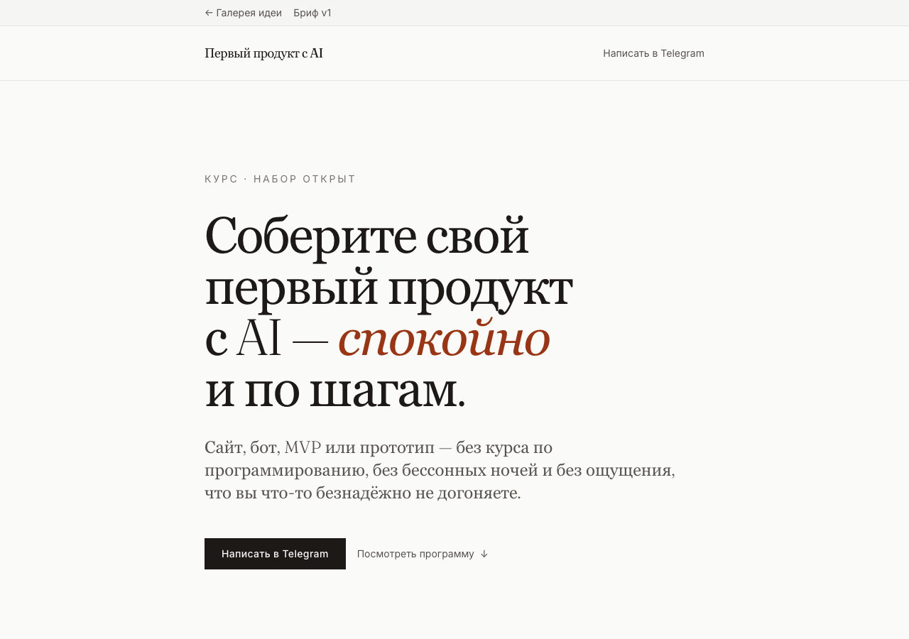
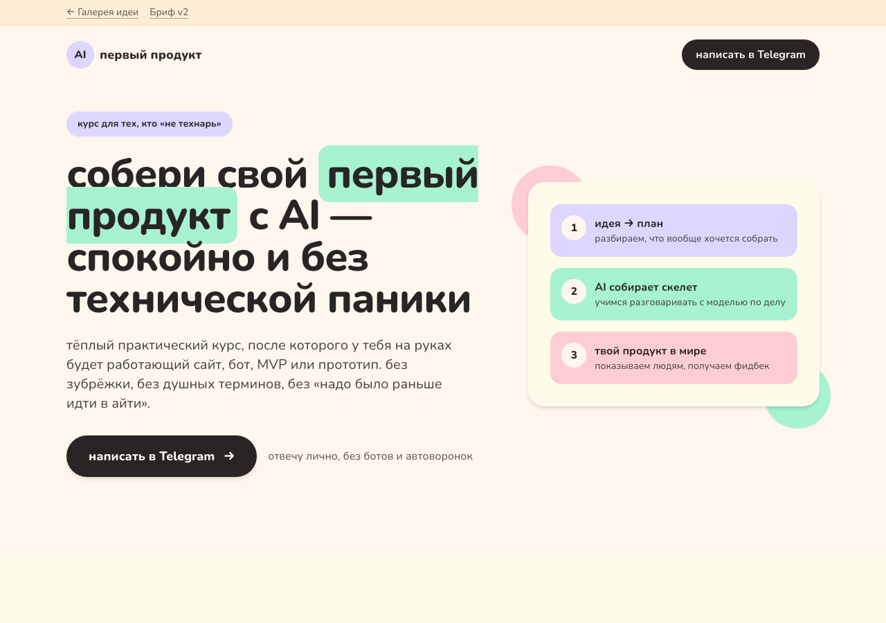
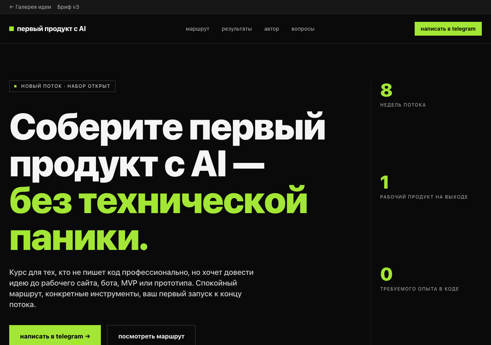

01
Идея
Сформулировать простую просьбу: сайт про меня, камера с фильтром, wishlist, генератор идей.
X26 · W4 Workshop · Shipping · 18 мая 2026
Урок про то, как быстро превратить мысль в HTML-артефакт: получить первую плохую версию, вытащить из неё бриф, собрать несколько визуальных вариантов, сохранить всё в репозиторий и показать другому человеку по ссылке.
Главная рамка
Цель воркшопа не в том, чтобы сразу собрать большой сервис с базой данных, авторизацией и платежами. Первый полезный результат намного проще: страница, демка или интерактивный прототип, который можно открыть, потрогать и отправить другому человеку.
Это снижает страх перед кодом. HTML становится не профессией фронтендера, а рабочим форматом мышления: идея превращается в видимую штуку, а видимая штука даёт следующий вопрос.
01
Сформулировать простую просьбу: сайт про меня, камера с фильтром, wishlist, генератор идей.
02
Получить плохую, но работающую версию. Не спорить с ней, а смотреть, что в ней уже есть.
03
Попросить AI задать три вопроса по одному: аудитория, цель, тон, ожидаемый результат.
04
Сохранить контекст в короткий PRD: для кого, зачем, какой формат, какие ограничения.
05
Сгенерировать несколько направлений и сравнивать не «красиво/некрасиво», а сетку, тон, акценты.
06
Сохранить репозиторий, сделать галерею вариантов и получить публичную ссылку.
Этап идеи
Эти скрины фиксируют момент, когда идея уже стала видимой: один PRD дал три разных HTML-направления. Их удобно обсуждать на занятии до выбора финального дизайна.



Методика
Урок строится не вокруг списка инструментов, а вокруг повторяемого цикла. Инструменты можно менять: ChatGPT, Claude, Gemini, LM Arena, Cursor, Codex. Метод остаётся тем же.
Первая победа не качество дизайна, а факт, что участник получил файл или ссылку. Поэтому стартовый сайт может быть плохим.
Хорошая практика: говорить простыми просьбами, просить вопросы, уточнять тон, сохранять решения в бриф.
Участники смотрят на чужие результаты и называют конкретное: сетка, типографика, палитра, акцент, настроение.
Папка с PRD, HTML и промптами нужна, чтобы завтра продолжить не с пустого чата, а с уже собранного контекста.
Инструменты
Быстрый старт: попросить сайт, открыть preview, скачать HTML, поделиться черновой ссылкой.
Тренировать глазомер: сравнивать версии, выбирать сильный результат, замечать стиль моделей.
Переходить от игрушечной демки к файлам: сохранить бриф, править HTML, делать варианты.
Довести до shipping: репозиторий как память проекта, хостинг как публичная ссылка.
Промпты
Это не один большой промпт, а набор маленьких шагов. Их удобно давать студентам по очереди или запускать агентом внутри демо-репозитория.
01
Быстро получить плохую, но видимую версию.
02
Собрать аудиторию, цель и тон через короткое интервью.
03
Превратить чат и прототип в reusable brief.
04
Развести дизайн-направления по папкам v1/v2/v3.
05
Собрать центр идеи с карточками вариантов.
06
Сохранить проект и подготовить публичную выдачу.
07
Понять, что именно понравилось, и перенести сильные решения в следующую версию.
Демо-репозиторий
Источник смысла: аудитория, цель и ожидаемый результат идеи.
Этот урок: маршрут, методический контекст и ссылки на материалы.
Копируемые команды для повторения процесса с другой идеей.
Три визуальных направления одного PRD: editorial, friendly, bold.
Версии
v1
Спокойный книжный минимализм: много воздуха, тёплая палитра, доверительная интонация.
v2
Тёплая, дружелюбная версия с пастельными карточками и тоном на «ты».
v3
Строгая сетка, тёмный контраст, лаймовый акцент, уверенный продуктовый тон.
Ведущему
Попросить участников назвать инструмент недели и одну эмоцию. Это включает личный контекст и показывает, что у всех разные входные точки.
Запрос «сделай сайт про меня» нужен как безопасный вход. Не оценивать результат как финальный, а использовать его как сырьё.
Просить не «нравится/не нравится», а конкретику: цвет, сетка, типографика, один акцент, язык, настроение.
Урок считается закрытым, когда у участника есть файл, бриф и понятный следующий шаг: продолжить в агенте, положить в репозиторий или опубликовать.